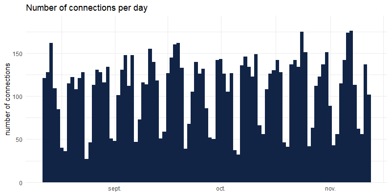

Logging tool for Shiny applications: record inputs or outputs changes, and infos about user’s session. All recording is done client-side to not slow down the application and occupy the server.
Installation
You can install the released version of shinylogs from CRAN with:
And the development version from GitHub with:
Usage
Call the main function track_usage in server part of application, and specify where to write logs:
The function will record :
- inputs : each time an input change, name, timestamp and value will be saved
- errors : errors propagated through outputs
- outputs : each time an output is re-generated
- session : informations about user’s browser and the application
Examples
Some example of what is recorded with logs from applications available on our Shiny-Server: http://shinyapps.dreamrs.fr/
Number of connections per applications:

Number of connections over time :

Which tabs (from sidebar in {shinydashboard}) in shinyWidgets gallery are the most seen :

User-agent is recorded per connection and can be parsed with uaparserjs : (unique users are not registered as we use the open source version of shiny-server)


 Fanny Meyer
Fanny Meyer Victor Perrier
Victor Perrier